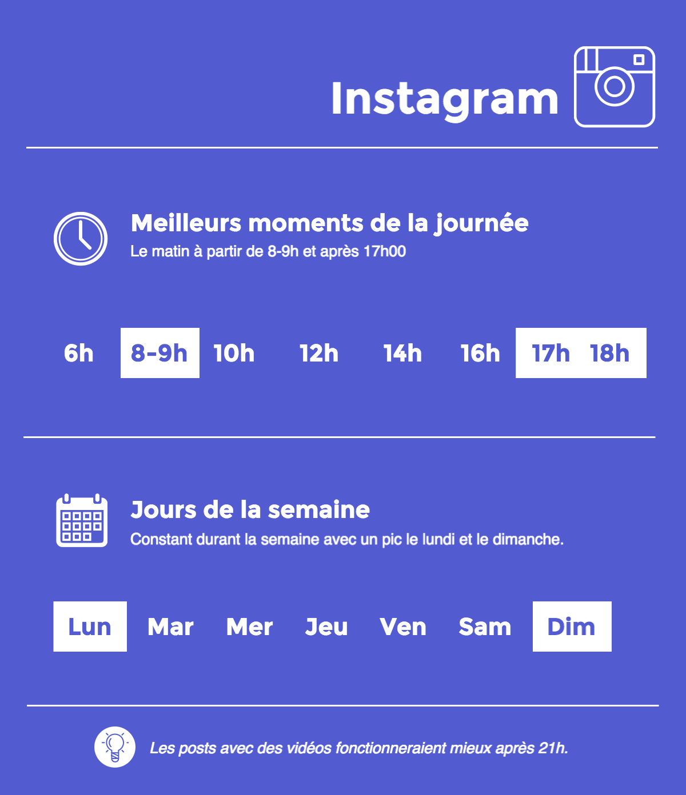

10/11/16 - temps de lecture : 4 minutes
Responsable SEO, Sécurité et Gestion de Contenu chez The Computer Firm
Quand poster sur réseaux sociaux pour optimiser la visibilité de vos posts ? Mise à jour info fin 2016 [Infographie]
Lundi matin 8 heure : vous avez méticuleusement préparé votre post Facebook, image, ponctuation, liens, hashtags et localisation, tout y est. Vous être fin prêt pour amasser un maximum de Likes et de commentaires. Un dernier check, ça y’est, c’est parti, votre post est publié !
Les heures passent et toujours aucune réaction, personne ne semble s’être rendu compte de vos talents de marketeur. Il est 13 heures, premier Like de la journée...ce sera le dernier que vous verrez concernant cette publication que vous avez mis tant de temps à préparer.
Explication ? Votre post est-il si mauvais ? Pas forcément.
En effet, dépendamment du réseau social sur lequel vous postez, l’heure et le jour de la semaine auxquels vous postez sont cruciaux pour optimiser la visibilité de vos publication.
Comme c’est bientôt Noêl, chez The Computer Firm, on vous a fait un petit récapitulatif des best practices pour maximiser vos chances de créer le buzz sur Facebook, Instagram, Twitter et LinkedIn.
1) Facebook
Le meilleur moment pour poster sur Facebook serait entre 13h et 16h en fin de semaine et durant le weekend. De manière générale, on estime qu’à partir de mercredi, les gens ont tendance à plus partager les posts qu’ils voient sur le fil d’actualité.
A éviter : le lundi et mardi en soirée.
Les meilleurs moments pour poster sur Facebook
1) Instagram
Concernant Instagram, le niveau d’engagement reste plus ou moins constant durant la semaine avec toutefois un pic le lundi et le dimanche.
Les meilleurs moments de la journée pour partager vos somptueuses photos sont le matin à partir de 8-9h et après 17h en fin de journée.

Les meilleurs moments pour poster sur Instagram
1) LinkedIn
Pour LinkedIn, étant donné que c’est avant tout un réseau professionnel, les meilleurs moment pour partager de l’information dessus coïncident beaucoup avec l’horaire de travail des personnes que vous voulez atteindre. On privilégiera le matin vers 8h ou avant la pause de midi à partir de 11h. Le soir après le travail, au environ de 17h30, semble être également un moment idéal pour publier vos publications lorsque les personnes finissent leur journée et sont en transit.
Concernant les jours de la semaines, concentrez vous sur le mardi, mercredi et jeudi lorsque les personnes ont déjà pleinement commencé leur semaine de travail.
Les meilleurs moments pour poster sur LinkedIn
1) Twitter
Twitter reste, comme Instagram, constant durant la semaine, avec toutefois un pic le mercredi pour le nombre de retweets possible pour un post. Les meilleures heures pour tweeter serait durant la pause de midi et à partir de 17h30.
Note : une étude récente démontre également que les tweets orientés b2c auraient un meilleur impact le weekend à l’instar des tweets b2b à favoriser durant la semaine.
Les meilleurs moments pour poster sur Twitter
Nous avons vu au cours de cet articles quels sont les jours et heures que nous vous suggérons d’utiliser pour maximiser la visibilité de vos posts sur les réseaux sociaux.
Ces “best practices” n’étant pas une science exacte, il faut avant tout trouver la solution qui fonctionne le mieux avec votre public cible et l’industrie correspondante. Pour cela, une seule solution : tester, tester, tester. Faîtes également attention aux fuseaux horaires qui pourraient rajouter un challenge supplémentaire dans votre quête aux nombre de Likes.
Alors prêt pour refaire un essai avec votre prochaine publication ?
Besoin d’un coup de main ?
Des spécialistes en marketing digital et optimisation des médias sociaux (SMO) peuvent vous aider à atteindre vos objectifs plus rapidement et vous fournir les outils essentiels pour convertir vos visiteurs en futurs clients. N’hésitez pas à nous contacter, pour en savoir plus sur les services qu’offre The Computer Firm dans ce domaine.
Nous sommes joignables au + 41 22 548 02 86, ou sur hello@thecomputerfirm.com.
Les meilleurs moments pour poster sur Facebook, Instagram, LinkedIn et Twitter : fin 2016
Responsable SEO, Sécurité et Gestion de Contenu chez The Computer Firm